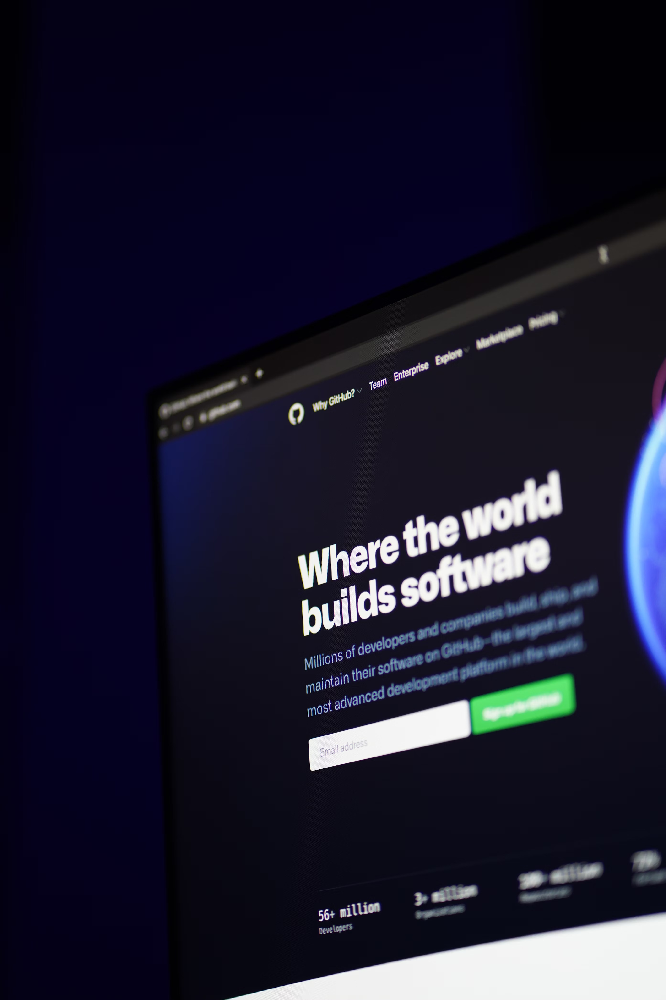

Java Programming and Object-Oriented Development
I have in-depth knowledge of Java and excel at creating stable, secure, and scalable Java applications.
By applying object-oriented programming principles, I've developed applications with a focus on inheritance,
aggregation, associations, and design patterns.
I'm also experienced in writing and running unit tests to ensure code quality and functionality.

Database Management
I have experience in designing and implementing both relational and NoSQL databases.
I can normalize databases to optimize structure and performance, as well as create complex SQL queries
to manage data.
Furthermore, I have experience integrating Java applications with databases using JDBC,
enabling stable and secure communication between the application and the database.
Problem Solving and Code Optimization
I have experience troubleshooting and optimizing code to achieve better performance
and stability in applications.
With a methodical and analytical approach, I can effectively identify and resolve issues.
I'm used to working with requirement specifications and quality standards to deliver solutions
that meet both technical and user-centric needs.

Version Control and Collaboration with Git and GitHub
During my studies, I learned how to use Git for version control and to work with GitHub as a
collaborative platform in development projects. I'm accustomed to systematically managing code changes,
creating commits, and handling branches, which enables me to work efficiently both independently and in a team.

Web Development
I have the skills to build user-friendly and responsive websites with high accessibility that follow industry standards.
By combining HTML, CSS, and JavaScript, I can create functional and aesthetically pleasing solutions.
I also have experience working with design mockups and style sheets, as well as validating and troubleshooting websites
to ensure high quality and compatibility.